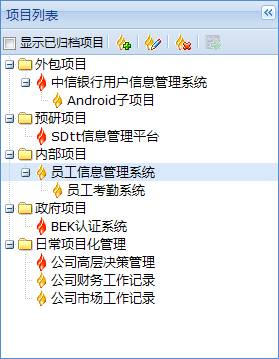
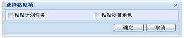
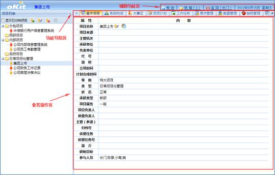

4.2.1.1 项目列表
通过项目列表可以添加项目，基于添加的项目可以添加子项目，对项目或子项目可以修改、删除、复制、粘贴、归档、取消归档。项目列表如下图所示。

图 项目列表
4.2.1.1.1 项目基本管理
1、添加项目、子项目
在项目列表中选择项目类型后，点击工具栏或右键菜单的“添加项目”按钮添加新项目。
在项目列表中选择一个项目，然后点击工具栏的“添加项目”按钮或右键菜单的“添加子项目”菜单添加该项目的子项目。
2、修改项目
在项目列表中选择一个要修改的项目，点击工具栏或右键菜单的“修改项目”按钮或基本信息界面的“修改”按钮可打开修改项目窗口。
3、删除项目
在项目列表中选择一个要删除的项目，点击工具栏或右键菜单的“删除项目”按钮删除项目。删除项目需填写删除原因。
4.2.1.1.2 复制、粘贴项目信息
1、复制项目
在项目列表中选择一个项目，点击右键菜单的“复制项目”复制项目。
2、粘贴项目
复制项目后，点击右键菜单的“粘贴项目XXX”，系统弹出对话框如下图所示：

图 选择粘贴项
“粘贴计划任务”是指将源项目的“项目计划”模块任务复制到新项目中；“粘贴项目角色”是指将项目角色（包括项目角色的权限）复制到新项目中。粘贴选项可以全选，可以单选，也可以不选。
4.2.1.1.3 项目归档、取消项目归档
在项目列表中选择一个项目，然后点击右键菜单的“项目归档”将项目归档。项目归档后，勾选工具栏上的“显示已归档项目”选项可以显示归档项目。通过右键菜单的“取消归档”可将归档的项目恢复为未归档的项目。
4.2.1.2 项目管理界面简介
在主页点击“项目管理”快捷方式进入项目管理模块，如下图所示。功能辅助区有帮助、信箱、返回三个按钮以及当前日期。它们的作用分别是为用户提供帮助信息；查看本人信箱的邮件；返回到主页。

图 项目管理界面
4.2.1.3 项目基本信息
左键选择项目列表中的项目，基本信息里显示选择项目的基本信息如下图所示。

图 项目基本信息